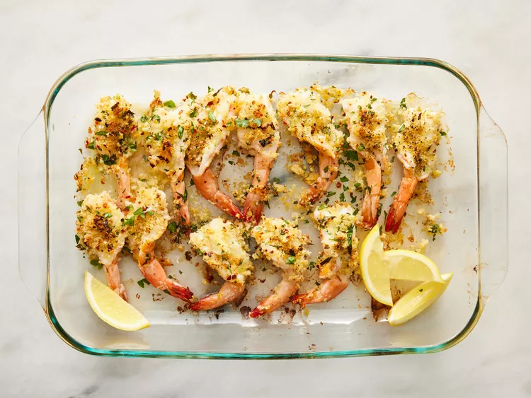

Shrimp Oregenta
Description
Definitely use very large shrimp for this shrimp oreganata recipe.
Think shrimp scampi meets a crunchy baked Parmesan topping.
You can serve them as an appetizer, on top of cooked pasta with extra lemon-butter sauce,
or simply with some bread and flavorful olive oil to dip in.
Ingredients
- cooking spray
- 1 ¾ pounds colossal shrimp (about 12 shrimp)
- ¼ cup dry white wine (such as Pinot Grigio)
- 2 tablespoons extra virgin olive oil
- 1/4 teaspoon kosher salt
- 2 tablespoons chopped fresh parsley, divided, plus more for garnish
- 2 tablespoons chopped garlic, divided
- 2 teaspoons lemon zest, divided
- 1 tablespoon freshly squeezed lemon juice
- 1/2 teaspoons crushed red pepper, divided
- 1/4 cup panko bread crumbs
- 2 tablespoons freshly grated Parmesan cheese
- 3 tablespoons unsalted butter, melted, divided
- 1 lemon, cut into wedges for serving
Steps
- Gather all ingredients.
- Preheat the oven to 450 degrees F (230 degrees C).
Line a rimmed baking sheet with aluminum foil and lightly spray with cooking spray.
- Peel shrimp, leaving tails intact.
- Use a paring knife to cut lengthwise down vein side of shrimp,
cutting almost but not all the way through the shrimp.
Remove the vein and gently press shrimp apart to butterfly it.

- Combine shrimp, wine, olive oil, salt, 1 tablespoon parsley, 1 tablespoon
garlic, 1 teaspoon lemon zest, and 1/4 teaspoon crushed red pepper in a bowl;
toss to coat shrimp evenly. Let stand at room temperature for at least 10 minutes.
- Meanwhile, combine panko, Parmesan cheese, 2 tablespoons melted butter, and
remaining 1 tablespoon parsley, 1 tablespoon garlic, 1 teaspoon lemon zest,
and 1/4 teaspoon crushed red pepper in a small bowl; stir until well blended.
- Remove shrimp from marinade and place, cut side up, about 2 inches apart on the prepared
baking sheet. Top each shrimp with about 2 teaspoons panko mixture, pressing lightly to adhere.
- Bake in the preheated oven until shrimp are cooked through, 8 to 10 minutes. Without opening oven,
switch oven to broil. Broil until topping is golden brown and crispy, 1 to 2 minutes.
- Transfer shrimp to a platter. Stir together lemon juice, remaining 1 tablespoon melted
butter and any accumulated juices from the baking sheet in a small bowl; drizzle evenly over shrimp on platter
and garnish with parsley. Serve hot with lemon wedges.

I am done and my first recipe, the Shrimp Oreganta is ready for serving.
Find details of the recipe from the source.